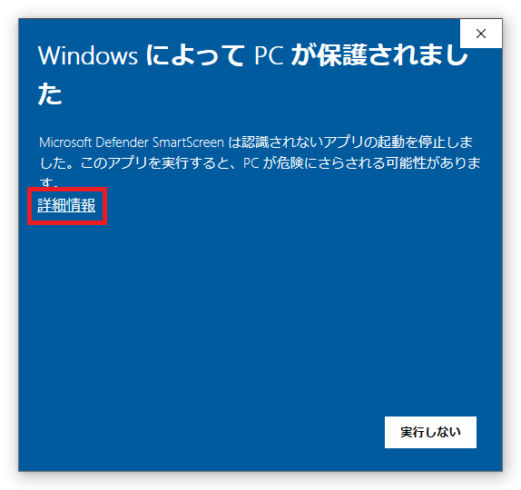
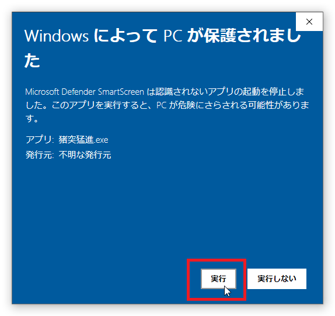

Windows
公開日：2021年7月7日

Windows 10以降では、exeファイルを実行する際にWindows Defenderにより実行がブロックされることがあります。
原因
これは発行元が明記されていないアプリケーションの実行に関してWindows Defenderが発する警告であり、正常な動作です。
exeファイルからウイルスが検出されたわけではありません。（ウイルスが検出された場合は別の警告が表示されます）
exeファイルからウイルスが検出されたわけではありません。（ウイルスが検出された場合は別の警告が表示されます）
解決手順
例として
一度この手順を済ましておくと、次回以降は警告が表示されることなく起動できます。
猪突猛進.exe
での手順を示しておりますが、すべてのアプリケーションで手順は同様です。
-
「詳細情報」を選択します。

-
「実行」を選択します。

-
アプリケーションが起動可能になります。


一度この手順を済ましておくと、次回以降は警告が表示されることなく起動できます。